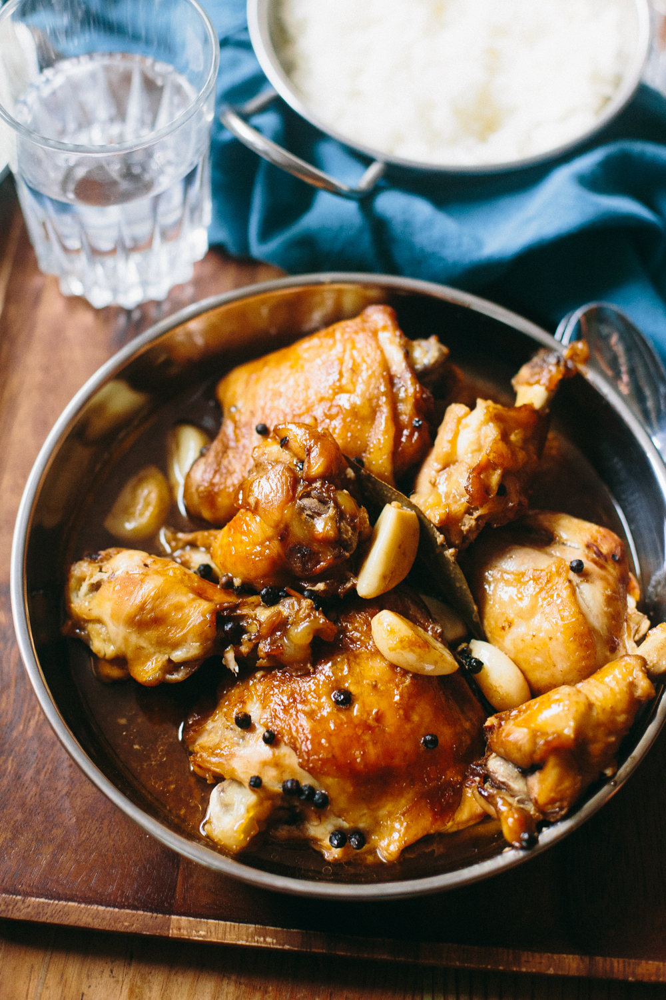

Chicken Adobo


by Panlasang Pinoy

The iconic national Filipino Dish of the Philippines, featuring bone-in chicken braised in a savory, tangy, and garlicky sauce made from soy sauce, vinegar, garlic, bay leaves, and black peppercorns..